Next: Crack propagation Up: Mesh refinement Previous: smoothbadmid.f Contents
After refining the mesh the boundary conditions have to be moved from the old (= unrefined) mesh to the new (= refined) mesh. This includes both single point constraints (SPC's) and multiple point constraints (MPC's). The general approach is the following: the boundary conditions on the old mesh are kept and new equations are generated linking all surface nodes of the old mesh (i.e. the part which has been remeshed) to those of the new mesh. Subsurface nodes are not relevant, since boundary conditions are usually only applied to surface nodes.
So for each surface node in the old mesh three equations (in 3D) are generated linking the displacement of this node to nodes of the new mesh. The coefficients of the equations are obtained by a standard interpolation procedure. For a node “a” in the old mesh linked to nodes 30, 58, 123 and 4009 in the new mesh such an equation looks like:
| 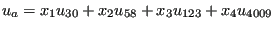 | (720) |
or
| 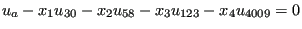 | (721) |
for the displacement component u in x-direction. Notice that the coefficient of the dependent node (first node in the equation; belongs to the old mesh) is 1, the other nodes in the equations can be considered to be independent nodes and belong to the new mesh.
These equations can be put in matrix form, with the columns corresponding to the dependent nodes (ordered in ascending order with a total of nnodestet nodes) and the rows corresponding to the global nodes numbers of the surface nodes of the refined mesh, Figure 187. The maximum independent node number occurring is labeled maxrow. Notice that, since the equations are identical for the global x-, y- and z-direction, only one equation per dependent node is stored. The matrix structure is stored with fields which are partially similar to the general way in which the stiffness matrix is stored in CalculiX, i.e. (see also Figure 188):
Figure 189 describes these fields for a simple example involving the following connecting equations:
| 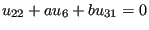 | (722) |
| 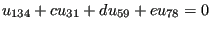 | (723) |
| 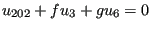 | (724) |
The fields above are needed because the terms in the connecting equations have to be reordered for each SPC or MPC on the unrefined mesh. Indeed, assume that the displacement in x for node 22 above was set to zero in the unrefined mesh by a SPC of the form 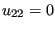. Then 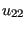 occurs as dependent degree of freedom in the SPC and the MPC above. This is not allowed in CalculiX: a node can occur at most once as dependent dof. Therefore, the MPC has to be reordered, e.g. in the form
| 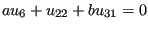 | (725) |
making node 6 of the refined mesh the dependent dof. This reordering has to be done for each node of the unrefined mesh used in a SPC or MPC. In order not to run out of independent refined mesh nodes which can be used as dependent nodes, the equations are reordered starting from the ones with fewest terms to the ones with most terms. To that end field icol, which contains the number of independent terms in each equations, can be used and ordered. However, in order to keep the information to which column (i.e. unrefined mesh node) the independent count belongs, the field ixcol is created. Notice that this field, when ordered, keeps the same ordering as field icol.
Before ordering ixcol it is modified in such a way that all entries corresponding to unrefined mesh nodes which do not belong to SPC's or MPC's are set to zero (since they do not have to be reorderd). Let us assume that in the example in Figure 189 there is a SPC defined in node 22 and 134, then ixcol is rewritten as 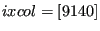, which yields after reordering 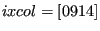. Then, the columns are treated from low to high in ixcol. The first nonzero entry is 9, which corresponds to column 1. For this column the largest coefficient (in absolute value) is identified and the corresponding term used as dependent dof. Let us assume that 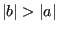, then the original equation
| (726) |
is reordered as
| 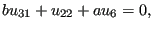 | (727) |
and node 31 cannot be used as dependent term in any other equation. Therefore, all row entries in row 31 have to be deactivated. This is done by reverting the sign all “31” entries in field irow, by use of fields irowt, jqt and loc. Subsequently, entry “9” in field ixcol is set to zero, since the corresponding column has been rearranged. Now only entry 14 is left, which corresponds to column 2 in field au. For the determination of the maximum coefficients only positive entries in field irow are taken into account, therefore, only coefficients d and e are compared. If 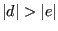 then the original equation
| (728) |
is reordered as
| 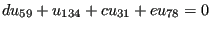 | (729) |
and row 59 is deactivated for further equation rearrangement by switching its sign in field irow.
Notice that all coefficients in matrix au are nonpositive since the shape function values for a linear or quadratic triangle are nonnegative (used in the interpolation procedure). Therefore, all rearranged equations are characterized by a nonpositive coefficient of the dependent terms.
The procedure may not be fool proof (especially if a lot of SPC's or MPC's contrain the unrefined mesh). If, due to the rearrangement of other equations no independent node in an equation not treated yet remains, an error message is issued and the program stops.
The procedure just described is repeated for each step, since the SPC's and MPC's can change from step to step. Before starting the procedure, however, the equations from the last step are reordered in their original form (i.e. with a leading coefficient of 1).